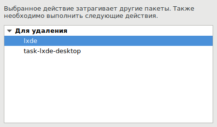

По странному стечению обстоятельств, графический архиватор xarchiver в Debian 9 очень старый и забагованный (версия 0.5.4). Он не умеет, к примеру, открывать RAR-архивы. В системе могут быть установлены unrar, rar, p7zip-rar, но толку от этого нет никакого.
Имеется несколько рецептов, как заставить xarchiver работать правильно. Стопроцентно работающий рецепт - это вместо xarchiver поставить xarchiver-xz. Проблема в том, что этот пакет существует только в репозитарии AUR дистрибутива Arch Linux. А что делать пользователям других дистрибутивов?
Все просто: надо поставить обновленный xarchiver из исходников. Исходники берутся с GitHub с официального репозитария. Например вот эти:
https://github.com/ib/xarchiver/releases/tag/0.5.4.17
Далее сборка идет согласно Redme-файлу. Перед установкой надо удалить системный xarchiver. Однако сделать это не всегда получится:

Вот так: хочешь удалить сраный архиватор? Удали все десктопное окружение! Или удаляй с нарушениями зависимостей, чтобы пакетный менеджер потом тебе весь мозг выел. Это Linux, детка.
Что делать? Можно под рутом просто подменить системный бинарник новым самодельным, и все будет работать. Узнать где лежит системный бинарник можно так:
> whereis xarchiver
xarchiver: /usr/bin/xarchiver
А новый бинарник xarchiver после сборки лежит в каталоге /src каталога исходников. Надо тупо скопировать его поверх системного.
Возможно, что в системе останется старый man-page, который лежит в файле:
/usr/share/man/man1/xarchiver.1.gz
Но такого файла в каталоге с исходниками после компиляции не обнаружилось. Поэтому можно оставить как есть, в любом случае xarchiver - это GUI-приложение, а не консольное. И всегда может выручить команда:
xarchiver --help
Эта команда покажет опции, актуальные для текущей версии архиватора.